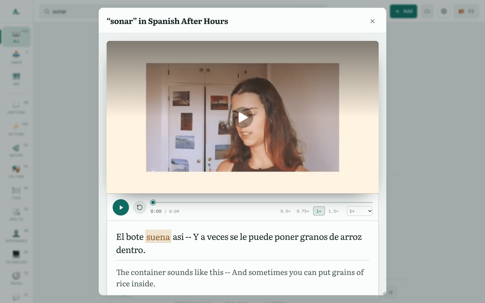

Retrieval, then judgementSpoken Usage Retrieval finds candidates by surface form and by lemma. The model only chooses among them and never rewrites the passage.
Refusing is the defaultA word with no good clip gets none. A passage id the model invented is dropped and counted.
MeasuredAsking for the whole passage to be translated took badly cut-off translations from 8 to 0 and full coverage from 81% to 91% (McNemar p = 0.004).experiments/clip-translation